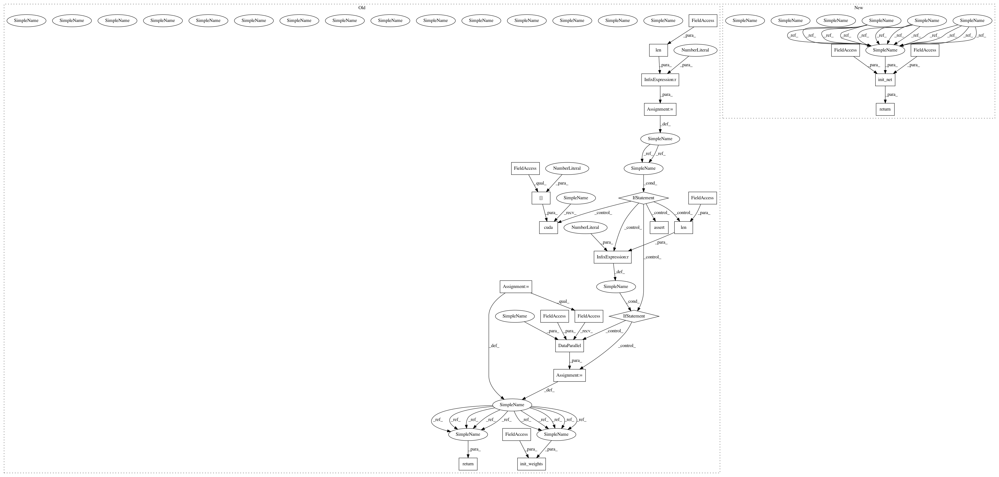

64bba81a6867ad72aad461e27221ea278d25f5c1,models/networks.py,,define_G,#,101
Before Change
def define_G(input_nc, output_nc, ngf, which_model_netG, norm="batch", use_dropout=False, init_type="normal", gpu_ids=[]):
netG = None
use_gpu = len(gpu_ids) > 0
norm_layer = get_norm_layer(norm_type=norm)
if which_model_netG == "resnet_9blocks":
netG = ResnetGenerator(input_nc, output_nc, ngf, norm_layer=norm_layer, use_dropout=use_dropout, n_blocks=9)
elif which_model_netG == "resnet_6blocks":
netG = ResnetGenerator(input_nc, output_nc, ngf, norm_layer=norm_layer, use_dropout=use_dropout, n_blocks=6)
elif which_model_netG == "unet_128":
netG = UnetGenerator(input_nc, output_nc, 7, ngf, norm_layer=norm_layer, use_dropout=use_dropout)
elif which_model_netG == "unet_256":
netG = UnetGenerator(input_nc, output_nc, 8, ngf, norm_layer=norm_layer, use_dropout=use_dropout)
else:
raise NotImplementedError("Generator model name [%s] is not recognized" % which_model_netG)
if use_gpu:
assert(torch.cuda.is_available())
netG.cuda(gpu_ids[0])
if len(gpu_ids) > 1:
netG = torch.nn.DataParallel(netG, gpu_ids)
init_weights(netG, init_type=init_type)
return netG
def define_D(input_nc, ndf, which_model_netD,
n_layers_D=3, norm="batch", use_sigmoid=False, init_type="normal", gpu_ids=[]):
After Change
def define_G(input_nc, output_nc, ngf, which_model_netG, norm="batch", use_dropout=False, init_type="normal", gpu_ids=[]):
netG = None
norm_layer = get_norm_layer(norm_type=norm)
if which_model_netG == "resnet_9blocks":
netG = ResnetGenerator(input_nc, output_nc, ngf, norm_layer=norm_layer, use_dropout=use_dropout, n_blocks=9)
elif which_model_netG == "resnet_6blocks":
netG = ResnetGenerator(input_nc, output_nc, ngf, norm_layer=norm_layer, use_dropout=use_dropout, n_blocks=6)
elif which_model_netG == "unet_128":
netG = UnetGenerator(input_nc, output_nc, 7, ngf, norm_layer=norm_layer, use_dropout=use_dropout)
elif which_model_netG == "unet_256":
netG = UnetGenerator(input_nc, output_nc, 8, ngf, norm_layer=norm_layer, use_dropout=use_dropout)
else:
raise NotImplementedError("Generator model name [%s] is not recognized" % which_model_netG)
return init_net(netG, init_type, gpu_ids)
def define_D(input_nc, ndf, which_model_netD,
n_layers_D=3, norm="batch", use_sigmoid=False, init_type="normal", gpu_ids=[]):
In pattern: SUPERPATTERN
Frequency: 4
Non-data size: 25
Instances
Project Name: richzhang/colorization-pytorch
Commit Name: 64bba81a6867ad72aad461e27221ea278d25f5c1
Time: 2018-04-18
Author: junyanzhu89@gmail.com
File Name: models/networks.py
Class Name:
Method Name: define_G
Project Name: richzhang/colorization-pytorch
Commit Name: 64bba81a6867ad72aad461e27221ea278d25f5c1
Time: 2018-04-18
Author: junyanzhu89@gmail.com
File Name: models/networks.py
Class Name:
Method Name: define_D
Project Name: richzhang/colorization-pytorch
Commit Name: 64bba81a6867ad72aad461e27221ea278d25f5c1
Time: 2018-04-18
Author: junyanzhu89@gmail.com
File Name: models/networks.py
Class Name:
Method Name: define_G